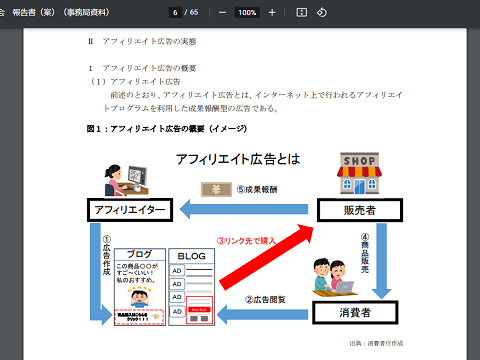

消費者庁がアフィリエイト広告の規制強化を検討
サイトでアフィリエイトをしている方も多いと思いますが、消費者庁でアフィリエイト広告に関する検討会が開催されたようです。
第6回 アフィリエイト広告等に関する検討会(2022年1月28日)
これによりますと、最近はアフィリエイトでの虚偽・誇大広告などが問題となっており、消費者庁への相談や苦情などが多くなってきているようです。そのため、たとえアフィリエイト広告であっても、広告主の責任であることを明確化して規制する方向で検討されています。
これは主に景品表示法に関するものと思いますが、例えば、数百円のお試し価格で購入したものの、実際には定期しばりがあり、定価1万円の商品を3ヶ月購入しないと解約できなかったなどの悪質なケースが該当するかと思います。
あるいは、シミや水素水、育毛、もしくはダイエット商品など、根拠がないにも関わらず、あたかも効果があるかのような虚偽の記載をして販売している商品などが該当します。
このような悪質な広告を排除するため、アフィリエイトサイトを規制し、また広告であることの表示も義務付ける方向で検討しているようです。
ぼくもこのような悪質な広告を排除することはいいことだとは思いますが、一般的なアフィリエイトサイトを「広告」とすることには違和感を感じています。
上記の資料では、アフィリエイターが「①広告作成」となっていますが、このような広告前提でサイトを運営しはじめるパターンは少ないはずです。

一般的なウェブサイト運営のプロセスでいえば、もともとは趣味でブログやホームページを更新していたものの、ページ数が多くなっていくに従い、必然的に有用な商品やサービスにリンクするケースが多くなっていきます。
この時点ではまだナチュラルリンクですが、サイトに設置している連絡先からASP経由でのお誘いを受け、次第にアフィリエイトリンクに差し替えて掲載するといったパターンが多いはずです。その際、広告主や代理店から文言についての要望などはまずありません。
そのため、結果的にはアフィリエイトサイトにはなるものの、そもそもが「広告」ではなく、表現の自由の範囲内での中立的な「情報コンテンツ」にすぎないのです。
おそらく、消費者庁が考えるアフィリエイト広告というのは、縦に長い記事風のPPC広告のことを指しているのではないかと感じています。確かにPPC広告については広告主の責任になるものと思いますが、一般的なアフィリエイトサイトは「広告」とはいえないものと思います。
このあたり、提携関係を終了してナチュラルリンクに戻せば、そのコンテンツは広告ではなくなり、景品表示法の対象外になるのかという疑問があります。
外見上、全く同じ内容であっても、リンクのURLがASP経由なら広告、ナチュラルリンクなら広告ではないなどとするのは意味のないことです。
そのため、PPC広告のみをアフィリエイト広告とし、通常のウェブサイトでのアフィリエイト掲載については広告表示の義務の対象外とすべきではないかと思います。